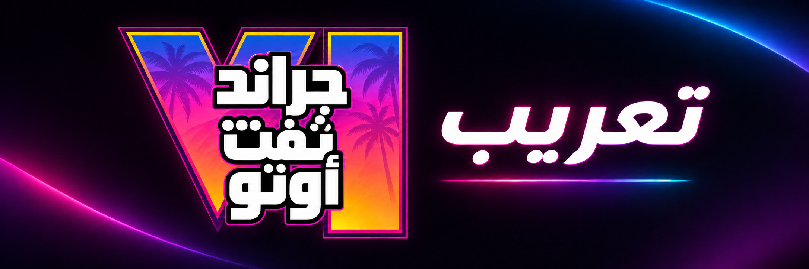

الدبلجة والأداء الصوتي
Voice dubbing
ElevenLabs v4
أو أقوى.
or stronger.

تعريبٌ عربيٌّ فصيحٌ للنصوص والدبلجة والصور، يُنجَز بالكامل بالذكاء الاصطناعي، من غير عمل بشري في الترجمة أو الأداء أو الرسم.
A formal-Arabic localization of the text, voice, and images, produced entirely by AI, with no human translation, voice acting, or art.
حتى صدور اللعبة في 19 نوفمبر 2026until the game launches on 19 November 2026
صدرت اللعبة في 19 نوفمبر 2026، وبدأ العمل على التعريب.The game launched on 19 November 2026, and localization work is under way.
ما نعرفه عن القصة والشخصيات والعالم قبل الصدور، وكيف نكتب أسماءها بالعربية.
What we know about the story, cast and world before launch, and how we write their names in Arabic.
سطو يفشل، ومؤامرة تمتد عبر ولاية كاملة.
A robbery goes wrong, and a conspiracy spans a whole state.
اقرأ القصةRead the story
جيسون ولوسيا وستة ممن يدورون في فلكهما.
Jason, Lucia and six people in their orbit.
تعرّف على الشخصياتMeet the cast
ست مناطق في ولاية ليونايدا، من الجزر إلى الجبل.
Six regions of Leonida, from the islands to the mountain.
جُل في ليونايداTour Leonida
أن نوفر تعريبًا عربيًا فصيحًا متكاملًا لجراند ثيفت أوتو 6، يشمل النصوص والدبلجة والصور، ويُنجز بالكامل بالذكاء الاصطناعي وفق النماذج المعتمدة، ثم ننشر ترقيعًا وأدواتٍ مجانيةً مفتوحة المصدر تبلغ الإصدار 1.0 بعد صدور اللعبة، من غير أن نوزّع أيًّا من ملفات اللعبة الأصلية. يلزم اللاعبَ امتلاكُ نسخة قانونية.
Ship a complete, formal-Arabic localization of Grand Theft Auto 6 — text, voice, and images — produced entirely by AI with the approved models, then release a free and open-source v1.0 patch and tools after the game launches, without ever distributing original game files. Players need their own legal copy.
ما زال المشروع في مرحلة التخطيط، والنسب نقطة انطلاق قبل صدور اللعبة.
The project is still in planning, and these percentages are the starting point before the game ships.
لا تُقبل مساهمة أُنتجت بنموذج أضعف من الحد الأدنى، ولا عمل بشري مباشر في الترجمة أو الصوت أو الرسم.
Contributions made with a weaker model, or with direct human translation, voice, or art, are not accepted.
الدبلجة والأداء الصوتي
Voice dubbing
أو أقوى.
or stronger.
الترجمة والنصوص
Translation and text
أو أقوى.
or stronger.
الصور والرسوم
Images and graphics
من OpenAI أو أفضل.
from OpenAI, or better.
المشاركة متاحة لكل أفراد المجتمع. اذكر اسم النموذج وإصداره في كل مساهمة.
Anyone in the community can help. Name the model and version in every contribution.
شغّل أنابيب الترجمة والدبلجة والصور بالنماذج المعتمدة.
Run the translation, dubbing, and image pipelines with the approved models.
ابنِ أدوات الترقيع والمعاينة، من غير رفع ملفات اللعبة.
Build patch and preview tools, and never upload game files.
افتح قضية واشرح الخلل، بلا إرفاق أصول اللعبة.
Open an issue and describe the problem, without attaching game assets.
هذا مشروع جماهيري غير رسمي، ولا صلة له بشركة Rockstar Games أو Take-Two Interactive، والعلامات التجارية ملكٌ لأصحابها. التعريب والدبلجة والكتابة والصور في هذا المشروع منتَجة كلها بالذكاء الاصطناعي. يقتصر التوزيع على الترقيعات والأدوات، ولا نوزّع ملفات اللعبة، ويلزم اللاعبَ امتلاكُ نسخة أصلية قانونية.
This is an unofficial fan project, not affiliated with Rockstar Games or Take-Two Interactive. Trademarks belong to their owners. All localization, dubbing, writing, and images are AI-generated. We distribute patches and tools only — never game files. You need your own legal copy.